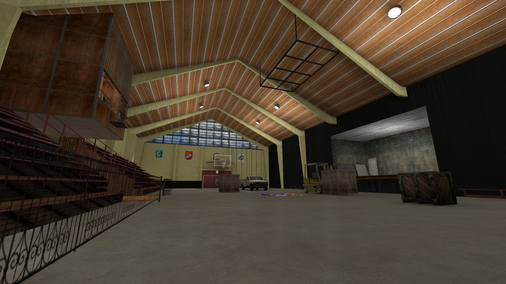
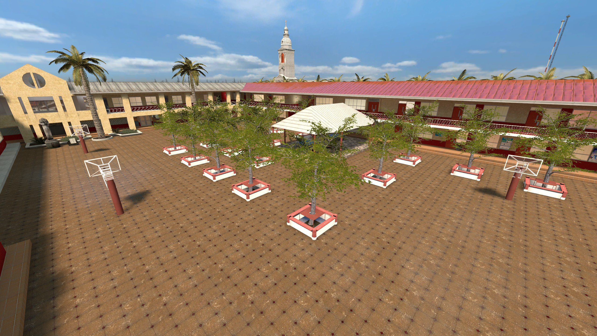
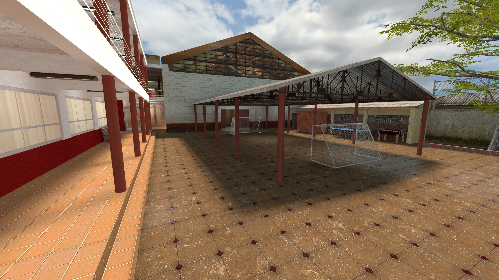
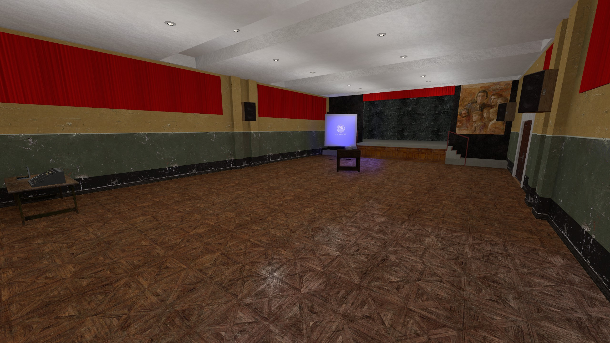

HD screenshot
Debido a la gran cantidad de áreas abiertas y pasillos largos, rápidamente se darán cuenta
de que los sniper son bastante OP. Si quieren divertirse, les recomiendo jugar sin ellos.
Para la ciudad, se retrata Curicó en el periodo de mediados de 2000s a 2010s, con varios
edificios característicos que los ex alumnos podrán reconocer.




Este mapa se comenzó a desarrollar en febrero de 2019 y casi se terminó alrededor de julio
de 2020. Por la universidad el lanzamiento se pospuso, pero finalmente podrán tener esta joyita en sus manos.
Con esto se cumple el sueño de todo alumnopoder jugar CS en su colegio xD.
Agradecimientos especiales a todos quienes ayudaron a probar el mapa, y aportaron con su
feedback para tratar de balancearlo.